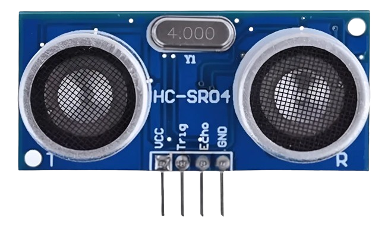
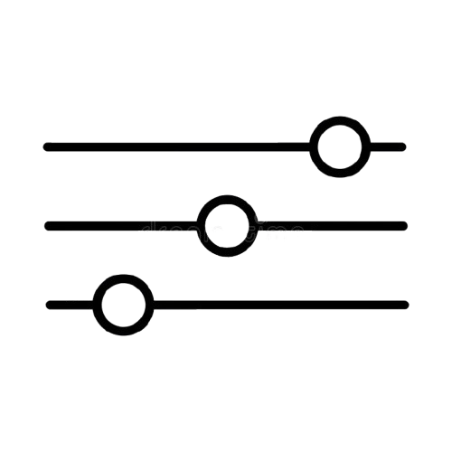
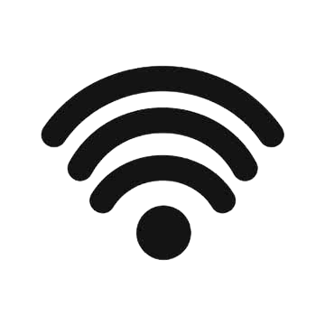
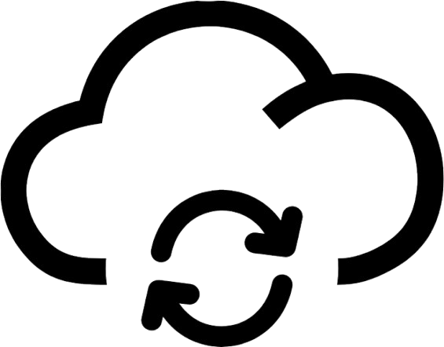
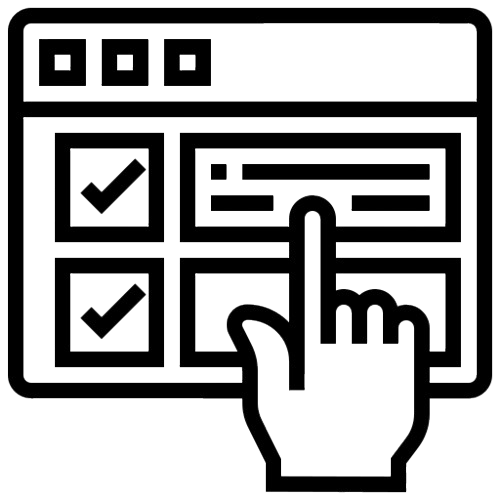

Solução para o problema
Utilizar o sensor ultrassônico conectado a um ESP32(microcontrolador) para coletar e processar as informações sobre o nível d’água.

Utilizando sensores ultrassônicos que medem a distância entre o dispositivo e a superfície da água, permitindo acompanhar continuamente o nível do reservatório!!!
O principal objetivo da empresa Hidrotech é desenvolver um sistema inteligente focado no monitoramento do nível d’água das caixas d’águas de condomínios residenciais. A partir disso, buscamos permitir um acompanhamento mais eficiente, com informações e alertas que ajudem a identificar situações críticas.
Utilizar o sensor ultrassônico conectado a um ESP32(microcontrolador) para coletar e processar as informações sobre o nível d’água.
Alertas de problemas que podem ocorrer;
Monitoramento da caixa d’água em tempo real;
Controle de acesso para moradores e técnicos;

Configuração de Limites e Alertas

Telemetria e IoT

Processamento e Sincronização

Interface e Usabilidade